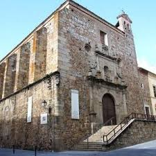
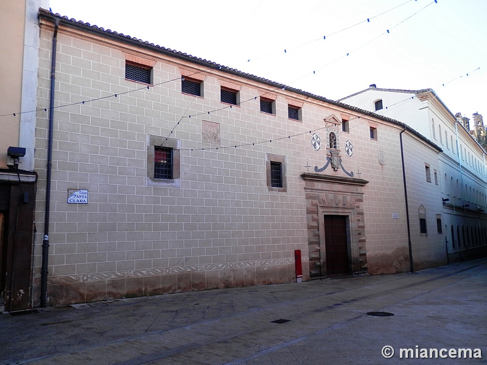
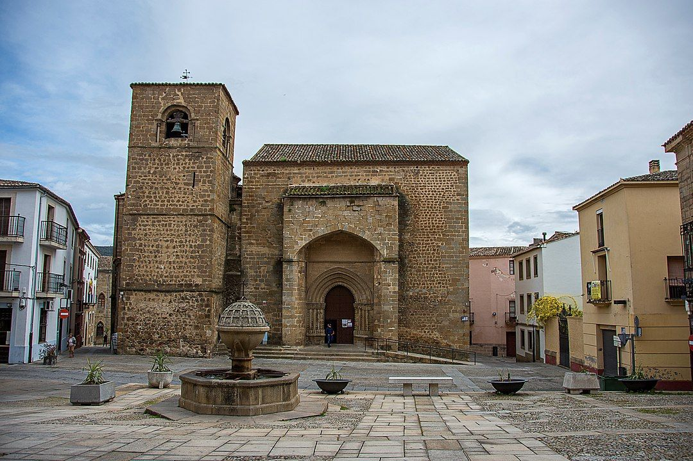
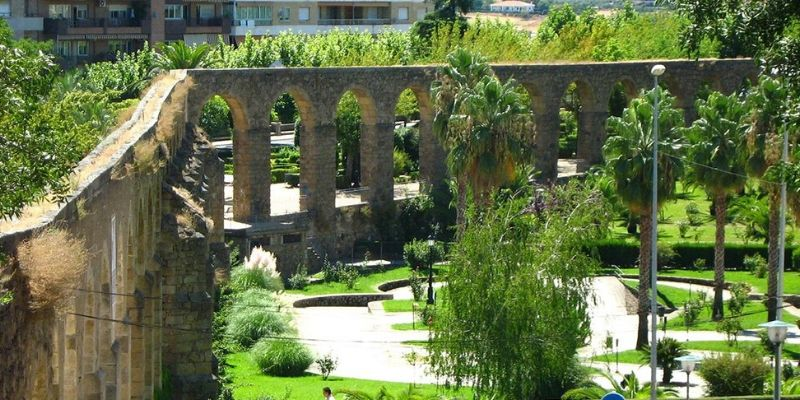
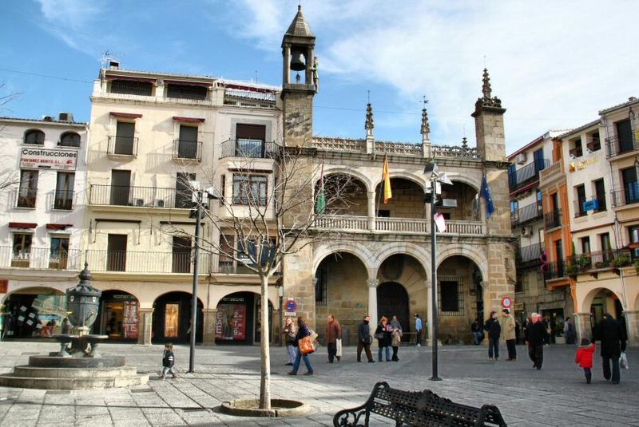

La ciudad de Plasencia tiene multidud de monumentos y puntos de interés que se pueden visitar tanto de forma gratuita o mediante la obtención de una entrada. Entre los cuales se encuentran:
Plasencia cuenta con dos catedrales solapadas:
Fundada por el obispo Gutiérrez Vargas de Carvajal en el año 1555, fue iglesia y convento de los Jesuitas. La fachada principal es plateresca, en el centro cuenta con una imagen de Santa Ana, la Virgen y el Niño. Cubierta por artesones con forma de medio cañón. Hoy en día se ha reconvertido en un magnífico auditorio.
el núcleo original del monasterio fue la casa solariega del Arcediano de Medellín, Gabriel Pizarro (a. 1573, en la calle de Detrás de Santa María hoy de la Encarnación. Serán los hermanos Pedro y Martín de la Mota (a. 1579) quienes adquieran la casa al Santo Oficio de la Inquisición, que había estado interesado, durante un tiempo, en instalar el tribunal en este lugar para convertirlo en cenobio de monjas de la Orden de Santo Domingo (a. 1583). Las necesidades del monasterio llevan a que en el s. XVII se amplíe con varios solares al otro lado de la calle y con salida a la contigua calle de Santa María, hoy de las Claras, dicha ampliación se corresponde con la iglesia conventual. Destaca en el edificio su armónica fachada, restaurada recientemente, donde se aprecia una primitiva puerta con biselado en punta de diamante (s. XVII) y una nueva composición superior en la que se ha utilizado arquitectura efímera a base de esgrafiados y donde el elemento reordenador es la heráldica de los Zúñiga (s. XIX).
iglesia románica del s. XIII con cabecera de tres naves que se simplifica en una sola a partir de la Capilla Mayor. Interesante testero ochavado del s. XV, mientras que la cubrición del resto de la nave principal era de madera hasta las reformas de los años sesenta. Muy interesantes las capillas de enterramientos de Fernando de Loaisa de mediados del s. XVI (lado de la Epístola) con bóveda de crucería estrellada y retablo sobre tabla de la Asunción de la Virgen, de 1561, de los artistas flamencos Juan de Flores y Jorge de la Rúa. Y la capilla del obispo de Coria, Pedro de Carvajal Girón (lado del Evangelio), cubierta con cúpula elíptica de principios del s. XVII y estatua orante del prelado realizada por el escultor portugués Andrés Francisco, natural de Estremoz. El Fuero de la ciudad fijaba la portada Norte como lugar para resolver los pleitos y juicios entre judíos, árabes y cristianos.
Obra de Juan de Flandes, fue construido a mediados del s. XVI y se realizó para traer agua desde las sierras de Cabezabellosa y El Torno, en sustitución de otra vieja cañería denominada «Cañería de los Moros».
Edificado en el s. XVI con estilo de transición del gótico al renacimiento y presidiendo la Plaza Mayor, podemos ver el magnífico Palacio Municipal, con una doble arcada renacentista en su fachada y en su costado izquierdo un escudo de Carlos V. Sobre la torre campanario se observa el abuelo Mayorga, popular personaje de la ciudad, que da las horas a visitantes y ciudadanos de Plasencia. En la Plaza Mayor y sus soportales, semanalmente todos los martes, la ciudad y la comarca celebran un original e interesante mercado, que nos recuerda épocas medievales. En uno de los laterales del Ayuntamiento se sitúa la Cárcel Antigua, construida en el s. XVII, con una fachada de sillería, donde figura un interesante escudo del rey Felipe IV.
